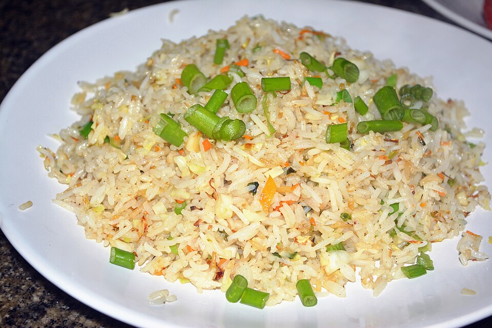

Fried Rice Recipe

Source: wikimedia.org
Description
A simple egg fried rice, perfect when you're tight on the budget.
Scallion is optional.
Ingredients
- 100 gr White Rice
- 2 tbsp Soy Sauce
- 2 Eggs
- 2 tbsp Vegetable Oil
- Salt and Pepper - season to taste
Steps
- Pour your vegetable oil into the pan and let it get hot.
- Crack your eggs over the pan.
- Immediately put in the rice and stir it from the bottom up.
- Pour your soy sauce and season with salt and pepper to taste. Stir again until it's even.
- Serve the dish and enjoy.
Home